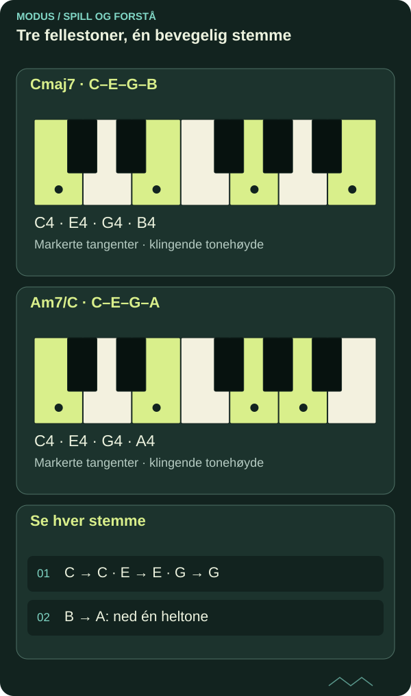

Stemmeføring: den korteste veien mellom akkorder
Du kan få en akkordrekke til å henge sammen ved å følge bevegelsen til hver enkelt tone. Noen stemmer kan bli liggende, mens andre flytter seg et lite stykke.

Se akkorden som flere melodier
Når du spiller fire toner samtidig, kan du tenke på dem som fire stemmer. Hver stemme kan fortsette til en ny tone i neste akkord. Dermed kan en akkordrekke også høres som flere små melodiske linjer.
Stemmeføring handler om denne videreføringen. Det er ikke bare et spørsmål om hvilket akkordnavn som kommer neste, men om hvordan de konkrete tonene kommer dit.

Les diagrammet som tekst
- Cmaj7 · C–E–G–B: C4 → E4 → G4 → B4
- Am7/C · C–E–G–A: C4 → E4 → G4 → A4
- Se hver stemme: C → C · E → E · G → G; B → A: ned én heltone
Behold det som allerede passer
Cmaj7 inneholder C, E, G og B. Am7 inneholder A, C, E og G. Tre toner er felles: C, E og G.
En mulig overgang på piano er C–E–G–B til C–E–G–A. De tre nederste stemmene beholdes, mens B flyttes ned et helt trinn til A. Den siste akkorden er Am7 med C i bassen, altså første omvending.
Nærmeste vei er et valg
Små bevegelser kan gi ro og sammenheng. Større sprang, skifte i register eller en ny basstone kan være riktig når du vil ha kontrast og tydelig retning. God stemmeføring betyr ikke at alle stemmer alltid skal bevege seg minst mulig.
På gitaren påvirker grepenes oppbygning hva som er praktisk. Et grep kan doble toner eller utelate en ren kvint. Se derfor både på hvilke stemmer du faktisk spiller, og på hvilken klanglig rolle du vil fremheve.
Prøv å holde øverste tone som en tydelig melodisk linje. Det kan gi akkordspillet en egen fortelling selv om resten av harmonien er enkel.
Hør tre linjer i de samme akkordene
Spill C–F–G–C i grunnstilling. Spill deretter samme akkordrekke med bassen C–C–B–C. De to midterste klangene er nå F/C og G/B. Hold de to øvre stemmene i hvert sitt register, slik at du kan følge dem uavhengig av bassen.
| Stemme | C | F/C | G/B | C |
|---|---|---|---|---|
| Overstemme | G4 | A4 | G4 | G4 |
| Mellomstemme | E4 | F4 | D4 | E4 |
| Bass | C3 | C3 | B2 | C3 |
Spill bassen alene. Legg merke til hvor sent den forlater C og hvordan B vender et halvt trinn opp til C. Spill så de to øvre stemmene alene. På piano kan du holde G i overstemmen gjennom de to siste akkordene. På gitar kan to personer dele stemmene, eller du kan spille inn én linje om gangen.
I andre klang er C bassen og F akkordens grunntone. I tredje klang er B bassen og G grunntonen. Når G blir liggende inn i sluttakkorden, flytter bass og mellomstemme seg samtidig slik at du likevel hører overgangen til C.
Prøv selv. Spill først G/B–C som skrevet. Gjenta med G2 i bassen under den nest siste akkorden og samme D4 og G4 ovenfor. Nå består den nest siste klangen av G og D, mens B er utelatt. Legg til B3 over G2 og før B3 til C4 i sluttakkorden. Behold de to øvre stemmene og sammenlign variantene. Syng bassen i begge og beskriv hvordan B–C og G–C gir forskjellig retning til samme sluttakkord.
Kontroll. I den første varianten går ledetonen til C i bassen. I den andre varianten gir G–C en tydelig bevegelse i grunntonene. Når B3 legges til og føres til C4, får du begge bevegelsene samtidig.
Faggrunnlag. Musikkteori v3 med redaksjonelle notater, §§11.1, 11.3 og 11.4.
Følg den stemmen du faktisk hører
Spill C–E–G–B til C–E–G–A og lytt bare til B–A i toppen. Spill så denne linjen alene. Sett de andre tonene tilbake og undersøk om du fortsatt kan høre bevegelsen som en egen melodi.
På gitar kan du velge et mindre grep som lar denne stemmen være tydelig. Det pedagogiske målet her er å se fellestoner og bevegelse i et konkret eksempel, ikke å dekke alle reglene for flerstemt sats.
FRA LESING TIL SPILLING
Prøv det selv.
Bygg Cmaj7–Am7 i akkordverkstedet. Sammenlign grunnstillingene med Am7 i første omvending. Spill deretter bare den øverste stemmen og lytt til linjen.
Utforsk omvendinger i akkordverkstedetSJEKK FORSTÅELSEN
Hva sitter igjen?
Tre spørsmål om det du har lest. Alle tre riktige gir fullført quiz. Du kan prøve så mange ganger du vil.
Fullføring lagres i denne nettleseren og deles mellom norsk og engelsk.
Du har svart riktig på alle tre spørsmålene. Ta ideen med til instrumentet.
Til artikkelbiblioteket ↗︎